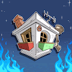 The Floor FLOOR NFT 系列由 7,777 个 AI 生成的收藏品 FLOOR 组成，这些 FLOOR 以艺术方式构建在以太坊区块链上。 所有 7,777 个都是由 DAHR 专门为该项目手绘的 150 多个属性以编程方式随机生成的。
The Floral Affair Floral Affair 是对柏拉图式关系及其所见之美的庆祝。 柏拉图式的关系在人类中扮演着重要的角色。 他们在亲密和互惠的范围内，同时允许探索每个自我。 每张照片的标
The Flower Girls: Special Editions 10，000个独特的花姑娘的集合，由950多个手绘元素生成，并作为ERC-721令牌存储在以太坊区块链上。 花姑娘们经过四个月的精心手工制作，
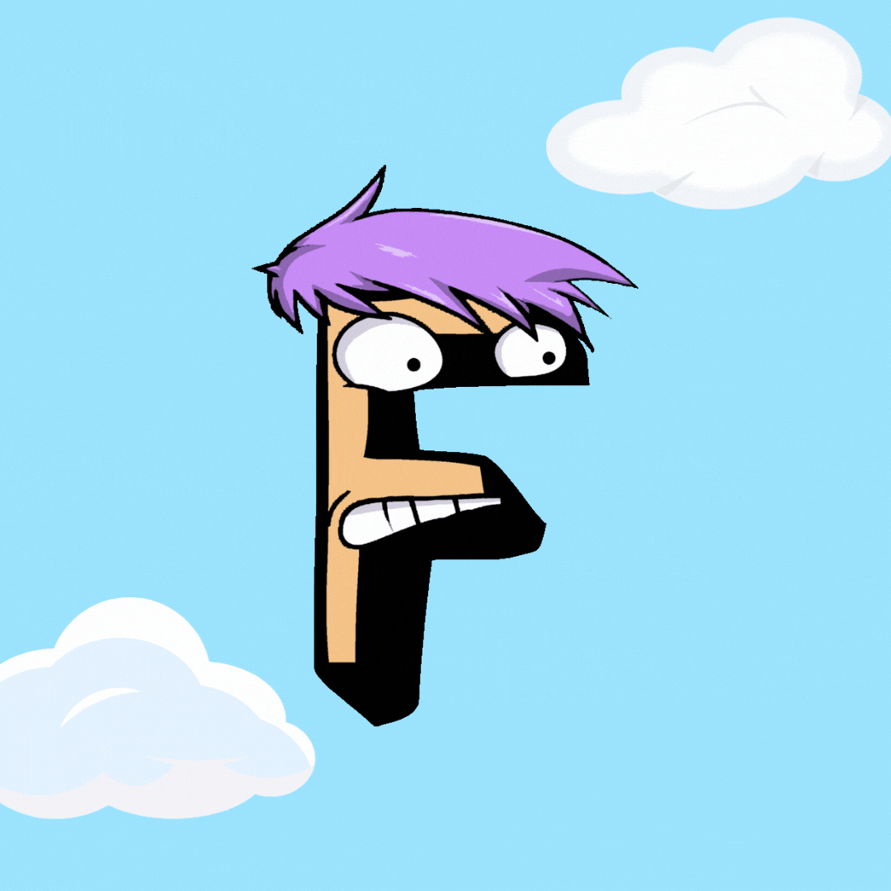 The Forgetfuls 欢迎来到 Forgetville… 一个被遗忘的乡村小镇，被 6,543 名当地 Forgetfuls 占据，他们在以太坊区块链中漫游。欢迎来到忘恩维尔。 一个被遗忘的乡村小镇，被当地的健忘者占领。早在
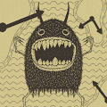 The Forgotten Cult 为提高人们对心理健康的认识而制作的系列。 50% 的特许权使用费将用于精神卫生机构。 The Forgotten Cult 的总销售额为 0 美元。 一个 The Forgotten Cult NFT 的平均价格为 0 美元。 有 1,165 名
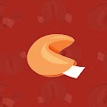 The Fortune Cookies 你有一天会拥有一个 CryptoPunk 吗？Artchick 明天会跟随你吗？你会成功吗？Fortune Cookies 将为你提供有关 NFT 空间和生活的所有问题的答案&hellip
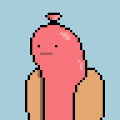 The Franks 4444 Hot Franks 在以太坊区块链上放松和烧烤。 烹饪书将于 2022 年第一季度出版！ Franks NFT - 常见问题（FAQ） ▶ 什么是法兰克人？ Franks 是一个 NFT（不可替代令牌）集合。
The Genesis RSS3 Avatar NFT Genesis RSS3 Avatar NFT 是 10,000 个独特头像的集合，经过精心设计，用于识别 RSS3 社区成员。 The Genesis RSS3 Avatar NFT 的总销售额为 110.88 美元。 一个 The Genesis RSS3 Avatar NFT NFT 的平均价格为 27.7 美元。 The Genesis RSS3 Avatar NFT
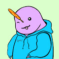 The Gnarwhals NFT 欢迎来到独角鲸 nft 收藏！我们是 1,111 只独角鲸 NFT 探索公海的祝福。一群独角鲸被称为祝福。 祝福可以帮助彼此在人生旅途中以有趣、积极和可持续的运动来照顾自
The Good Avocados Good Avocado NFT（加密爱好者）的私人社区每个都由 186 多个属性组成，展示了他们的大个性和超能力。起源故事：我们的鳄梨（Babycados）在生命早期就
The Goofy Ghost Gang 高飞鬼帮是由一位非常有才华的 3D 艺术家设计的！ 创始团队充满热情，致力于为所有经验水平的 NFT 狂热者建立一个蓬勃发展的品牌和避难所。 Goofy Ghosts 将成为 Web3 的一
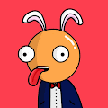 The Goopies Goopies 是一个社区策划的收藏品，其中包含 2000 个独特的数字收藏品，这些收藏品在以太坊区块链上开槽。 我们的 Goopies 同伴是由数千万种可能的组合以编程方式生成的，
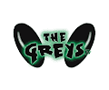 The Greys TV 感谢您对The Greys TV动画项目的早期支持 以及您对The Greys TV NFT的兴趣！请继续关注此页面和我们的Twitter，以推出我们的Discord和社
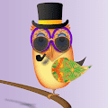 The Groovy Owl Society Episode 01 时髦的猫头鹰协会NFT 4444 独特的 NFT 在第 1 集中遵循概念音乐平台 其背后的概念效用是全球音乐艺术家之间的合作。为此，将在英国推出一家音乐时尚森林咖啡
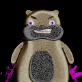 The Hamster Game 第一个 Trade-2-Earn NFT 游戏！ Polygon 区块链上的 20,000 个 NFT 的集合现在 10,202 个 NFT 即将动画系列 也许你的仓鼠会成为动画系列中的英雄买/卖“抽水”或“转储”仓鼠
The Highest Office The Highest Office 是终极收藏，汇集了来自世界各地的 8400 位无所畏惧的领导人，他们永远在区块链上。 拥有 T.H.O NFT 可解锁我们社交俱乐部的会员资格，该社交俱乐部围绕元宇
The Hooligans by ANOMSTER Hooligans 是 4,000 个独特的 1/1 游戏化身的生成集合。 流氓是侵入以太坊区块链的虚拟朋克。 受到 90 年代早期复古游戏的启发，Hooligans 将成为您可以在 Hooliverse 和其他
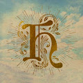 The House Game BrokeBoyz合同房子现在是 BrokeBoyz 的一部分，更多信息即将推出！ The House 是一个文化机构，其历史可以追溯到 14 世纪。 我们是智慧、文化、知识和权力的殿堂
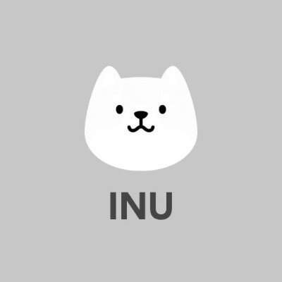 THE INU NFT Inu NFT 受到 Inu 社区的启发，Inu NFT 的目标是继续为建立 Inu 世界的经济体系做出贡献。 Inu NFT 不仅是 NFT，它还有助于聚集热爱艺术、web3、美食、动漫、i
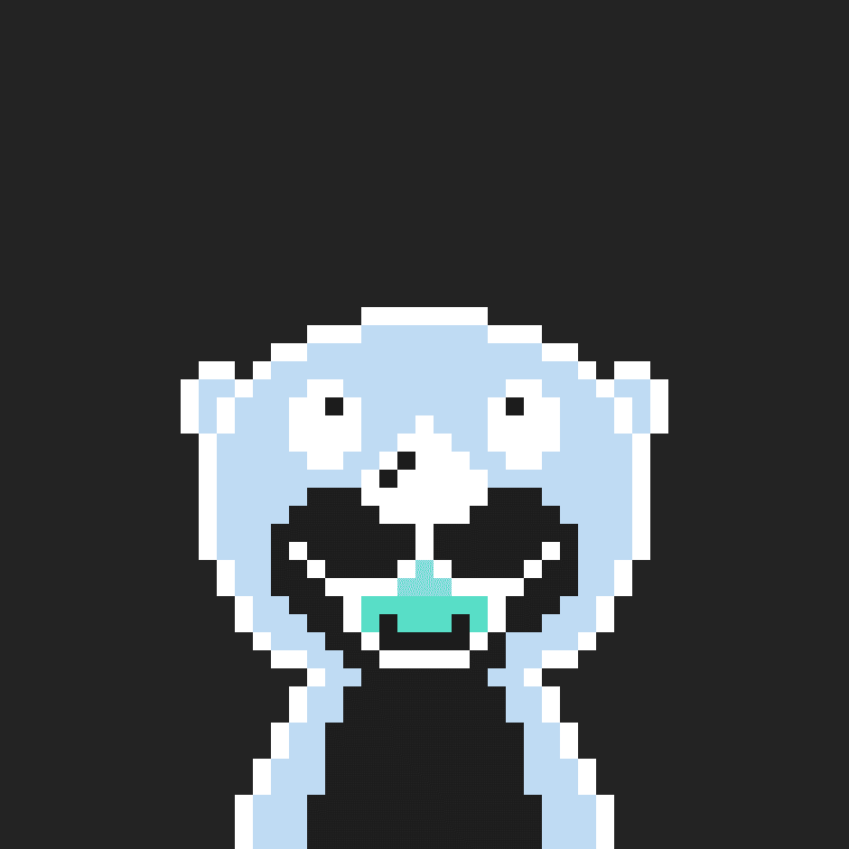 The Inverted Otters 倒置水獭是一组 10,000 只倒置的像素水獭，它们来自另一个版本的多元宇宙。 当收藏售罄时，实用程序将被解锁。❌没有 WL ❌ 没有路线图 ❌ 没有网站 ❌ 没有 DiscordOnly 倒水獭
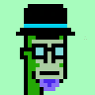 THE KLAYTN PUNKS Klaytn Punks - Klaytn 区块链上的 10,000 个算法生成的朋克像素艺术收藏品！ 每个克莱朋克都有自己的克莱特主题风格和稀有度！ 不隶属于 LARVA LABS 立即加入 Klay Punks 俱乐部 - 铸币现在在
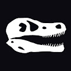 The Last Raptor* “你知道什么比高质量的艺术品更好吗？具有实用性的高质量艺术品！”考虑到这一概念，我们超越了这一概念，创造了一个改变游戏规则的 NFT 收藏品。 The Last Raptor
The Last Samurais | TLS The Last Samurais 是 Samurais 的 333 个生成 NFT 角色的集合。 什么是最后的武士 | TLS？ 最后的武士 | TLS 是一个 NFT（不可替代令牌）集合。存储在区块链上的数字艺术品集合。
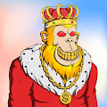 The LazyO 对您的 LazyO 进行排名 是 Polygon 区块链上 1500 只随机生成的猩猩的集合。 通过拥有 LazyO，您将成为长期品牌、愿景和社区的一部分。 30% 的收入将提供给印度尼西亚的
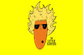 The Little Surfers 一个社区拥有的 NFT 项目，以两个热爱海洋的姐妹的著名艺术为特色。 Little Surfers 社区拥有 5,555 件独特的 NFT 艺术品，致力于在我们共同驾驭数字创意浪潮的同时保护人类和
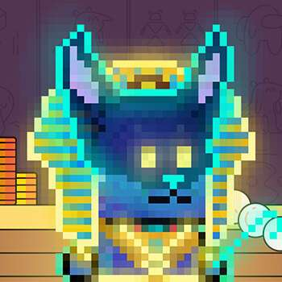 the littles prize hut 用你的 1-UP 药水将你的小宝石升级给小朋友！ 我们是小家伙，我们只想玩得开心 10，000 名梦想家、探险家和恶作剧制造者正在寻找新的 frens。 加入我
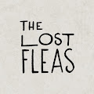 The Lost Fleas 创建者 JrCasasEach Flea 是在以太坊区块链上铸造的独特 1/1 动画 NFT 描述包括找到每个人的坐标以及了解它隐藏的角色或故事的一些线索。你准备好收养跳蚤了吗？ The Lost Fleas 是一
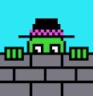 The Lurkers 潜伏者在初级阶段已售罄！对于个人资料图片，潜伏聊天并只是一般地表达自己。 100 个独特的、单独绘制的 1/1 在他们自己的 ERC-721 合同上铸造！ 他们是艺术！ Lurkers NFT -
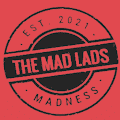 The Mad Lads The Mad Lads 是 8888 个独特 NFT 的集合，这些 NFT 都是随机生成并存在于以太坊区块链上，并遵循 ERC-721 标准。 现在铸造 0.02 The Mad Lads NFT - 常见问题（FAQ） ▶ 什么是疯狂小伙子？
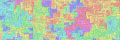 The Meld OmniChain 第一个 OmniChain Gen Art - 完全确定性 - LayerZero 使 NFT 能够被铸造或转移到以下任何链：ETH、BSC、MATIC、AVAX、FTM、Arbitrum、Optimis
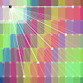 The Mesh by Takens Theorem “公共区块链中社会性的视觉表达。”初始销售的大部分收益（7.25 ETH）捐赠给了UkraineDAO和GiveDirectly。有关The M
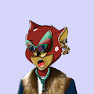 The Mice House 我们向您展示了 3,500 个独特的 Mice NFT。 The Mice House 是存储在以太坊区块链上的独一无二的 NFT 数字集合。 每只老鼠都是通过组合各种特征通过算法生成的，每只老鼠都
The MonstroCities 经过怪物城市 MONSTROCITIES VOXELS 已上线 MonstroCities 是第一款真正的社交化身虚拟世界游戏。 MonstroCities 是 SandBox 的官方合作伙伴，在 The Sandbox 拥有一个 6x6 的庄园。MonstroCities 是 8,000 个独
The Moods Of Phantom -3500-0.05 ETH, 3500-4000-0.1 ETH, 4000-5000-0.2ETH, 5000-6000-0.3ETH, 6000-7000–0.5ETH, 7000-10000-1ETH 及以上,故事: 在漫长而寒冷的冬天 来自地球各地的 1950 名科学家试图寻找宇宙中的生命，并向宇宙的不同
THE MOTTY COLLECTION 收集来自 John “MOTTY” Motson 的 5,000 个独特回忆，以庆祝他在 50 年的职业生涯中最喜欢的 50 场比赛。 Fanz是足球的技术平台，是球迷文化和区块链的交汇点。
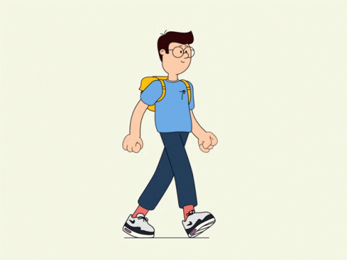 The Nerdz NFT 0.001 ETH/Mint 上线 第一个提高 NFT 市场意识的项目。 Nerdz 是 2,000 个启用实用程序的 PFP 的集合。 每个 Nerdz 都是您进入伟大的 Nerdiz 生态系统的入场券。 他们是一个很好的朋友，但有些人
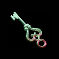 THE NFTPASS 此 NFT 允许您成为 NFT Pass 社区的一员，并参与在社区钱包上运行的自动交易 NFT 系统和分析我们的目标是使用我们的分析系统和自动 AI 交易机器人来翻转 NFT，将社
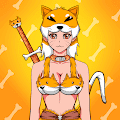 The Ninja Hideout (Females) 来自忍者藏身处的 444 名女性忍者。这个集合是由于智能合约错误将最大数量限制为 444 而发生的，现在已经成为一个独特的 Genesis 集合。Ninja Hideout Females (Genesis) 是一个 NF
The Nobodies Club Nobodies Club 是 1,000 个 Nobodies NFT 的集合，汇集了各行各业的人们。 拥有Nobody 后，会员可以获得独家指导、认证计划、项目合作、人力资源和增长联系网络。前500 名
The Non-Chimpz Headz Non-Chimpz 是 1214 只 3D 黑猩猩的集合，它们超越了可悲的起源。官方网站：nonchimpz.comNon-Chimpz 作为 ERC-721 代币存储在以太坊区块链上。Non
The Nouneys 690 个独特角色的集合，向塑造 CC0 文化的艺术家致敬。没有路线图，只有共鸣。Nouneys 是设计师[马特·唐尼 (Matt Downey]) 的 690 个独特角色的集合，向塑造 CC0 文化
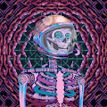 The Official Euphorians Genesis 将意识引入元宇宙的 6969 个动态 NFT 的集合。每个创世纪都可以被质押以获得 $Euphoria 实用代币，这将赋予它们超凡脱俗的好处和实用性。 欧菲利亚人创世纪我们的使命是
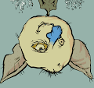 The Official Not Goblin Town ot goblintown is not goblintown is not goblintown is not goblintown is not goblintown is not goblintown 不是 twitter 空间，可以发出 3 小时的地精噪音，但可能会持续 6 小时。不是妖精不住石窟不依附于人家，不敲锅碗瓢盆，不抢
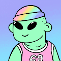 The OG DoodFellaz 0,000 个 DoodFellaz 在以太坊区块链上和平地振动创建的第一个 NFT 项目将移交给社区 DAO DAO 将从二次销售中获得资金！ 由民主选举产生的 Doods 委员会决定的路线图谁是 乱七八糟的